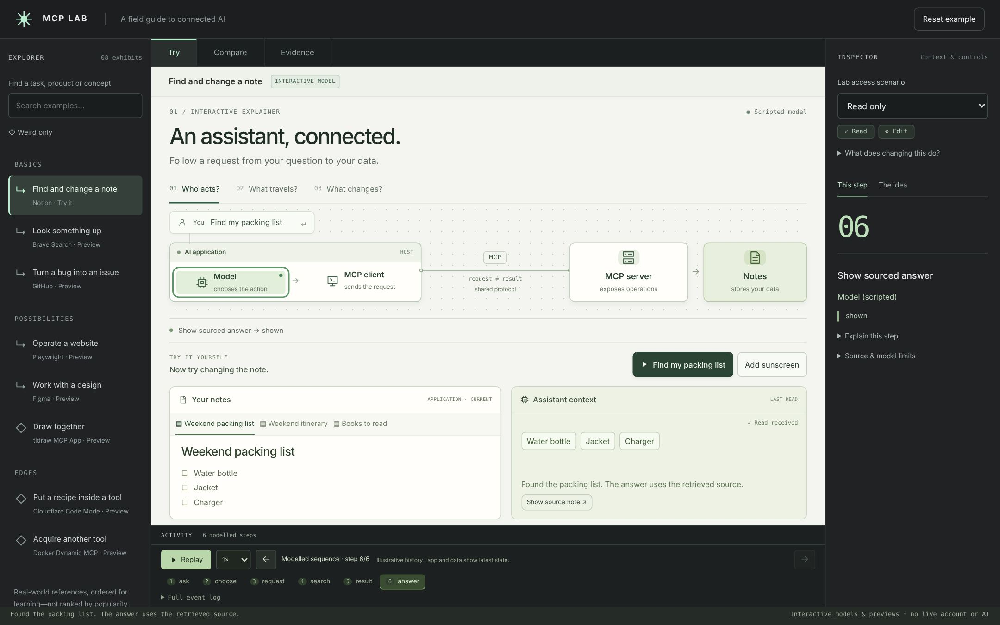

See what your AI is handed.
AI assistants now read your notes, file your bugs and drive your browser. They do it through the Model Context Protocol. MCP Lab is a workbench where you try it slowly and watch what actually travels, with fictional data, no account and no live AI.

WHY IT EXISTS
Most explanations stop at boxes and arrows. The interesting part happens at the edges, where a sentence becomes an action. Every exhibit has the same three views:
- Try
Do the task yourself, step by step, and see each request and result.
- Compare
What the assistant last read, next to what is actually there now.
- Evidence
What is real, what is modelled, and the sources behind both.
What’s MCP?
A common plug between AI applications and everything outside them. The AI application, the host, connects to MCP servers. Each server describes what it can do. The model chooses, the host’s MCP client sends the request, and the server does the work in your notes, your repository or your browser.
Find my packing list
One common interface connects an AI app to many different tools.
// what a server hands your assistant tools: [ search_notes, read_note ]
MCP is just a list of tools.
Then it escalated quickly.
Because who decides what a tool is?
Eight steps from a menu to a program.
Each step changes the same list. The inspector shows what the assistant is handed; the activity log shows what crossed the wire.
- STEP 01
It’s a list.
Connect an MCP server and the host asks one question: what can you do? The answer is a list. Each tool has a name, a sentence of description and the inputs it accepts.
- STEP 02
Someone has to choose.
You ask for your packing list. The model reads the names and descriptions and picks one. It never sees the code behind them, only the sentence.
- STEP 03
Reading is not changing.
A tool that edits looks just like one that reads. Servers can add hints such as
readOnlyHintordestructiveHint, but the spec tells hosts to treat them as untrusted. The host decides what to ask you before a change. - STEP 04
The list can change while you talk.
A server can announce that its tools changed. The host fetches the list again: something you relied on is gone, and something new is there, mid-conversation.
- STEP 05
A tool can ask back.
With elicitation, a server can pause and ask you a question through the host. The conversation is no longer one-way.
- STEP 06
A tool can bring its own screen.
MCP Apps let a tool return an interactive interface, a
ui://resource, that the host shows inside the chat. Your drag becomes the assistant’s next input. - STEP 07
One tool can hold a whole program.
Some servers offer just
searchandexecute. The model writes code that composes many API operations. Two tools, unbounded behaviour: counting tools tells you almost nothing. - STEP 08
And the description is a program, too.
The model treats descriptions as guidance. A description can carry instructions you are never shown. Researchers call this tool poisoning. Whoever writes the list shapes the behaviour.
Everyone, a little.
- The server authorwrites
writes the name, the sentence and the inputs. That is the tool’s whole public self.
- The hostpresents
chooses what to show you, what to confirm and what to hide.
- The modelinterprets
interprets the sentence and decides when it applies.
- Youapprove
approve the action, or don’t. Often without seeing any of the above.
Each hand-off is a place where meaning can shift. The lab puts each one under glass.
Simple to strange.
Real products, ordered for learning, not by popularity. One is playable today. Seven are researched previews with their sources. Every exhibit says whether it is a model, a recording or a live connection.
- ↳Find and change a noteNotion · How can an assistant read something outside the conversation, and then change it?TRY IT
- ↳Look something upBrave Search · Where does an answer get its information?PREVIEW
- ↳Turn a bug into an issueGitHub · What makes an intention a precise application action?PREVIEW
- ↳Operate a websitePlaywright · Can a tool expose an instrument instead of one app?PREVIEW
- ↳Work with a designFigma · What can structured design access reveal that an image cannot?PREVIEW
- ◇Draw togethertldraw MCP App · Can your gesture become the assistant’s next input?PREVIEW
- ◇Put a recipe inside a toolCloudflare Code Mode · How much can a single tool call contain?PREVIEW
- ◇Acquire another toolDocker Dynamic MCP · Can the available toolbox change during the task?PREVIEW
No exhibits match.
Find the note. Try to change it. Switch the access, then try again.
Not affiliated with any product shown; names belong to their owners.